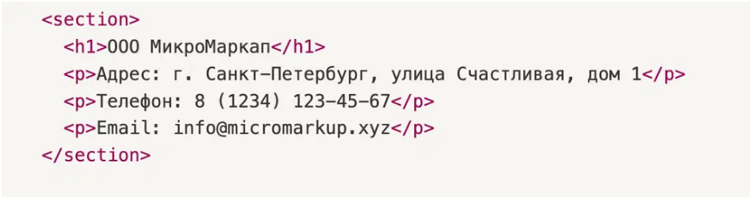
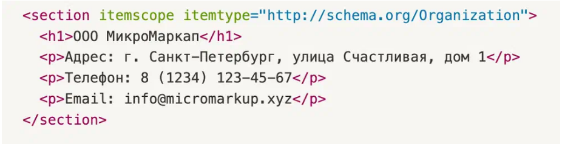
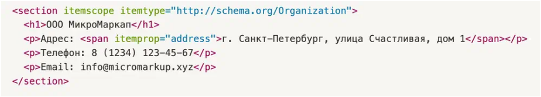
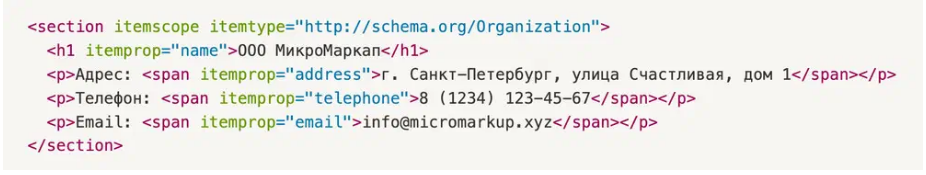

Как добавить микроразметку на сайт
Попробуем добавить микроразметку на сайт вымышленной компании «ООО МикроМаркап». Чтобы разметить контакты, используем Schema.org.
Так блок с контактами выглядит до того, как разработчик настроил микроразметку
Дальше действуем по алгоритму:
1. Подбираем подходящий словарь на сайте схемы https://schema.org/. Для описания секции выбираем словарь Organization.
2. Указываем атрибуты, чтобы поисковый робот смог увидеть, что данные в секции используют разметку словарем.
Добавляем атрибут itemscope, который задает область связанных метаданных. Здесь же включаем связанный атрибут itemtype, где в качестве значения указываем URL-адрес используемого словаря Organization. В результате получается запись вида «ключ-значение»: itemtype="http://schema.org/Organization"
3. Размечаем адрес организации. Schema.org предоставляет довольно широкий выбор вариантов, как можно разметить адрес. В этом случае нужно использовать атрибут itemprop, который задает свойство объекта для его описания. Используем itemprop со значением address, чтобы выделить в разметке адрес организации: itemprop="address"
Важный момент — itemprop заведомо оборачивает данные об адресе: Само описание данных «Адрес:» сюда включать не нужно
Аналогичным образом используем itemprop для разметки контактных данных: телефона и адреса электронной почты. В качестве значения используем telephone и email.
В итоге получаем запись вида itemprop="telephone" и itemprop="email"
Микроразметка для секции с данными об организации готова. Теперь нужно проверить её корректность с помощью одного из валидаторов: Google, Yandex или Schema.org. Даже если кажется, что ошибок нет, полезно специально «сломать» микроразметку и посмотреть, что посоветует исправить валидатор.